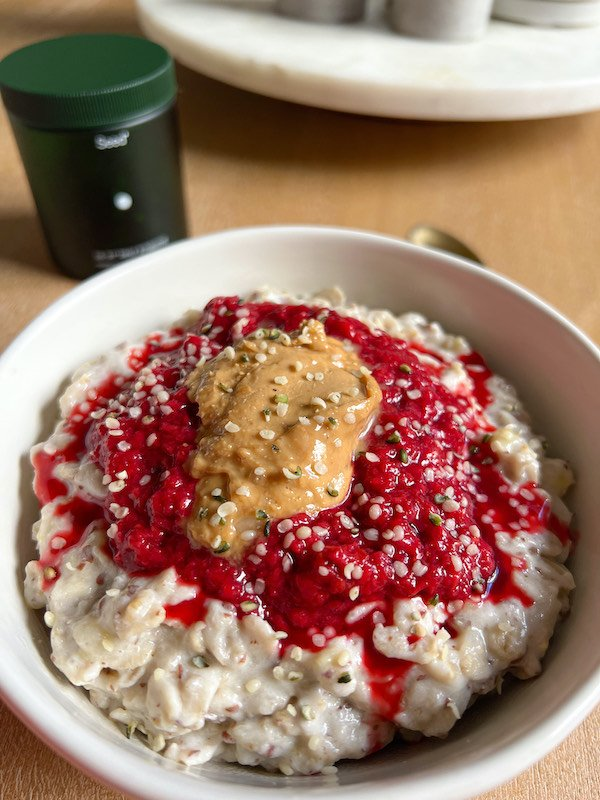

Home
Porridge

Ingredients
- 1/2 cup to 1 cup Oats (depending on hunger)
- Water (twice volmume of oats)
- Spoon of Tahini
- Raspberries (Fresh or Frozen, however many you like)
- Sugar/Honey/Maple Syrup (Optional)
- Add oats to pan and heat on stove on a medium heat until boiling
- Turn the heat down and stir with a spoon until the desired consistency
- Add raspberries and stir
- Transfer to bowl of choice and drizzle Tahini on top